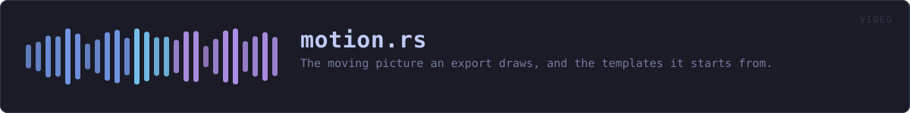

crates/veilvoice-video/src/motion.rs
veilvoice-video · 1116 lines · read the source here · or on GitHub
The moving picture an export draws, and the templates it starts from.
Roadmap item 175. The Browser's video used to be a black frame with the sound under it, which is enough for somewhere that only takes video and is nothing anybody would choose to watch. This is the picture a recording tool draws: a wave that answers the sound as it plays, moving across the frame, in colours chosen to look right in motion.
The whole look is a setting
Motion is every part of it:
- the lettering: the built-in face, heavier, or none at all (
Face); - the colours: the background and the wave, each a flat colour or a gradient (
Fill); - the shape: bars from a baseline, bars mirrored about the middle, or a line (
Style); - how strongly the wave answers the sound (
Motion::response); - how many seconds of it are on screen at once (
Motion::window_secs); - how quickly it settles after a loud moment (
Motion::settle_secs).
Templates, so nobody has to open the advanced half
templates is one for every theme the application already has, built from that theme's own colours, and several more chosen because they look right moving rather than because they match a panel. The default is the application's default theme, and its settings are the ones that looked best at sixty frames a second: high enough quality and smooth enough that the defaults are the answer for most people.
Why a timeline of levels rather than the samples
Drawing a frame from the samples means reading every sample on screen, for every frame: six seconds of 48 kHz audio is nearly three hundred thousand samples, sixty times a second. So the recording is reduced once, to a level every five milliseconds with the settling already applied (levels), and a frame reads a few hundred of those. The smoothing is computed in time order along the whole recording, which is what makes it a property of the sound rather than of the frame rate: the same recording settles the same way at twenty-four frames a second and at sixty.
The same picture on every machine
As for everything crate::raster draws: no system fonts and no dependency, so two people exporting one recording with one template get the same frames.
In plain words
This draws the video: a wave that moves with the voice, in a colour scheme you pick from a list or make yourself. The defaults are chosen so that most people never need to change anything.
WHAT THIS FILE CONTAINS
1116 lines defining 27 functions (18 public), 9 types and 8 constants. Everything below is read out of the source, so it cannot disagree with the code.
The types it owns.
enum Faceline 65 · How the title and the times are lettered.enum Directionline 91 · Which way a gradient runs.enum Fillline 117 · A colour, or two with a gradient between them.enum Styleline 160 · The shape the wave is drawn as.struct Motionline 193 · The whole look of a video.struct Templateline 249 · A named starting point.struct Levelsline 444 · How loud the recording is, every five milliseconds, already settled.struct Layoutline 512 · Where everything on a frame goes.struct Rendererline 558 · Draws the frames of one export.
What happens when it runs. These are the ways in: public, and nothing else in this file calls them, so they are what an outside caller reaches first.
Face::labelline 80 · What this is called where it is chosen.Direction::labelline 106 · What this is called where it is chosen.Fill::middleline 153 · The colour a thumbnail or a picker shows for this fill: its middle.
reachesat,mixStyle::labelline 175 · What this is called where it is chosen.Motion::checkedline 225 · Refuse settings outside the ranges the controls offer.templateline 435 · The template with this identifier.
reachestemplates,from_paletteLevels::duration_secsline 451 · How long the recording is.Levels::peakline 459 · The loudest settled level between two moments, from 0.0 to 1.0.levelsline 478 · Reduce a recording to the timeline a picture is drawn from.Renderer::newline 573 · A renderer for levels at size, fps frames a second, with title lettered at the top unless the face is Face::None.
reacheslayout,letterRenderer::framesline 628 · How many frames the video has: the length times the rate, rounded up so the last partial frame is still shown.Renderer::undrawableline 634 · Text that came out as boxes, so a front end can say so before the render rather than after.Renderer::frame_bytesline 639 · The size of one frame in bytes, as rgb24.Renderer::frameline 644 · Draw frame index into out, which is resized to fit.
reachesstill,draw_foot,draw_wave,clock,letter,mix,paintthumbnailline 810 · A picture of a whole recording, for a list of them.
WHAT CALLS WHAT
The functions this file defines, and the calls between them. An edge means the callee's name appears, called, inside the caller's body. This is a syntactic reading, not a type-resolved one. 22 of 25 functions are drawn; the diagram is bounded at 22 so it stays readable.
The same graph as Mermaid source
%%{init: {"theme":"base","themeVariables":{"background":"#1a1b26","primaryColor":"#1f2335","primaryTextColor":"#c0caf5","primaryBorderColor":"#7aa2f7","secondaryColor":"#16161e","tertiaryColor":"#16161e","lineColor":"#737aa2","textColor":"#c0caf5","mainBkg":"#1f2335","nodeBorder":"#7aa2f7","clusterBkg":"#16161e","clusterBorder":"#2f3549","fontFamily":"ui-monospace, SFMono-Regular, Consolas, monospace","fontSize":"14px"}}}%%
flowchart TD
n_label(["Face::label<br/>line 80"])
n_label(["Direction::label<br/>line 106"])
n_at["Fill::at<br/>line 133"]
n_middle(["Fill::middle<br/>line 153"])
n_label(["Style::label<br/>line 175"])
n_default["Motion::default<br/>line 215"]
n_checked(["Motion::checked<br/>line 225"])
n_from_palette["from_palette<br/>line 260"]
n_templates["templates<br/>line 417"]
n_template(["template<br/>line 435"])
n_duration_secs(["Levels::duration_secs<br/>line 451"])
n_peak(["Levels::peak<br/>line 459"])
n_layout["layout<br/>line 526"]
n_new(["Renderer::new<br/>line 573"])
n_frame(["Renderer::frame<br/>line 644"])
n_still["Renderer::still<br/>line 651"]
n_draw_wave["Renderer::draw_wave<br/>line 660"]
n_draw_foot["Renderer::draw_foot<br/>line 716"]
n_paint["Renderer::paint<br/>line 755"]
n_letter["letter<br/>line 781"]
n_clock["clock<br/>line 845"]
n_mix["mix<br/>line 856"]
n_at --> n_mix
n_default --> n_from_palette
n_draw_foot --> n_clock
n_draw_foot --> n_letter
n_draw_foot --> n_mix
n_draw_foot --> n_paint
n_draw_wave --> n_paint
n_frame --> n_still
n_middle --> n_at
n_new --> n_layout
n_new --> n_letter
n_paint --> n_mix
n_still --> n_draw_foot
n_still --> n_draw_wave
n_template --> n_templates
n_templates --> n_from_palette
click n_label href "https://github.com/tilas01/veilvoice/blob/main/crates/veilvoice-video/src/motion.rs#L80" "open the source"
click n_label href "https://github.com/tilas01/veilvoice/blob/main/crates/veilvoice-video/src/motion.rs#L106" "open the source"
click n_at href "https://github.com/tilas01/veilvoice/blob/main/crates/veilvoice-video/src/motion.rs#L133" "open the source"
click n_middle href "https://github.com/tilas01/veilvoice/blob/main/crates/veilvoice-video/src/motion.rs#L153" "open the source"
click n_label href "https://github.com/tilas01/veilvoice/blob/main/crates/veilvoice-video/src/motion.rs#L175" "open the source"
click n_default href "https://github.com/tilas01/veilvoice/blob/main/crates/veilvoice-video/src/motion.rs#L215" "open the source"
click n_checked href "https://github.com/tilas01/veilvoice/blob/main/crates/veilvoice-video/src/motion.rs#L225" "open the source"
click n_from_palette href "https://github.com/tilas01/veilvoice/blob/main/crates/veilvoice-video/src/motion.rs#L260" "open the source"
click n_templates href "https://github.com/tilas01/veilvoice/blob/main/crates/veilvoice-video/src/motion.rs#L417" "open the source"
click n_template href "https://github.com/tilas01/veilvoice/blob/main/crates/veilvoice-video/src/motion.rs#L435" "open the source"
click n_duration_secs href "https://github.com/tilas01/veilvoice/blob/main/crates/veilvoice-video/src/motion.rs#L451" "open the source"
click n_peak href "https://github.com/tilas01/veilvoice/blob/main/crates/veilvoice-video/src/motion.rs#L459" "open the source"
click n_layout href "https://github.com/tilas01/veilvoice/blob/main/crates/veilvoice-video/src/motion.rs#L526" "open the source"
click n_new href "https://github.com/tilas01/veilvoice/blob/main/crates/veilvoice-video/src/motion.rs#L573" "open the source"
click n_frame href "https://github.com/tilas01/veilvoice/blob/main/crates/veilvoice-video/src/motion.rs#L644" "open the source"
click n_still href "https://github.com/tilas01/veilvoice/blob/main/crates/veilvoice-video/src/motion.rs#L651" "open the source"
click n_draw_wave href "https://github.com/tilas01/veilvoice/blob/main/crates/veilvoice-video/src/motion.rs#L660" "open the source"
click n_draw_foot href "https://github.com/tilas01/veilvoice/blob/main/crates/veilvoice-video/src/motion.rs#L716" "open the source"
click n_paint href "https://github.com/tilas01/veilvoice/blob/main/crates/veilvoice-video/src/motion.rs#L755" "open the source"
click n_letter href "https://github.com/tilas01/veilvoice/blob/main/crates/veilvoice-video/src/motion.rs#L781" "open the source"
click n_clock href "https://github.com/tilas01/veilvoice/blob/main/crates/veilvoice-video/src/motion.rs#L845" "open the source"
click n_mix href "https://github.com/tilas01/veilvoice/blob/main/crates/veilvoice-video/src/motion.rs#L856" "open the source"
classDef entry fill:#1f2335,stroke:#7aa2f7,color:#c0caf5
class n_label,n_label,n_middle,n_label,n_checked,n_template,n_duration_secs,n_peak,n_new,n_frame entry
classDef api fill:#1f2335,stroke:#7dcfff,color:#c0caf5
class n_at,n_templates,n_still api
classDef helper fill:#1f2335,stroke:#bb9af7,color:#c0caf5
class n_default,n_from_palette,n_layout,n_draw_wave,n_draw_foot,n_paint,n_letter,n_clock,n_mix helperThis site loads no third-party script, so it cannot run Mermaid; the diagram above is the same nodes and edges drawn by the generator instead. GitHub renders the source below directly.
ITEMS
| Item | Line | Documentation |
|---|---|---|
Face pub enum | 65 | How the title and the times are lettered. |
Face::ALL pub const | 77 | Every face, in the order they are offered. |
Face::label pub fn | 80 | What this is called where it is chosen. |
Direction pub enum | 91 | Which way a gradient runs. |
Direction::ALL pub const | 103 | Every direction, in the order they are offered. |
Direction::label pub fn | 106 | What this is called where it is chosen. |
Fill pub enum | 117 | A colour, or two with a gradient between them. |
Fill::at pub fn | 133 | The colour at a point, given as a fraction of the width and height. |
Fill::middle pub fn | 153 | The colour a thumbnail or a picker shows for this fill: its middle. |
Style pub enum | 160 | The shape the wave is drawn as. |
Style::ALL pub const | 172 | Every style, in the order they are offered. |
Style::label pub fn | 175 | What this is called where it is chosen. |
RESPONSE_RANGE pub const | 185 | The smallest and largest Motion::response. |
WINDOW_RANGE pub const | 187 | The shortest and longest Motion::window_secs. |
SETTLE_RANGE pub const | 189 | The shortest and longest Motion::settle_secs. |
Motion pub struct | 193 | The whole look of a video. |
Motion::default fn | 215 | |
Motion::checked pub fn | 225 | Refuse settings outside the ranges the controls offer. |
Template pub struct | 249 | A named starting point. |
from_palette fn | 260 | The template a theme makes: its own background, its two accents as the wave, its own text colour. |
EXTRAS const | 283 | The templates that are not a theme, chosen for how they look moving. |
templates pub fn | 417 | Every template: one per theme, in the themes' own order, then the extras. |
template pub fn | 435 | The template with this identifier. |
HOP_SECS pub const | 440 | Seconds between two entries of a Levels timeline. |
Levels pub struct | 444 | How loud the recording is, every five milliseconds, already settled. |
Levels::duration_secs pub fn | 451 | How long the recording is. |
Levels::peak pub fn | 459 | The loudest settled level between two moments, from 0.0 to 1.0. |
levels pub fn | 478 | Reduce a recording to the timeline a picture is drawn from. |
Layout struct | 512 | Where everything on a frame goes. |
layout fn | 526 | Where the wave, the title and the progress line go on a frame of this size. |
Renderer pub struct | 558 | Draws the frames of one export. |
Renderer::new pub fn | 573 | A renderer for levels at size, fps frames a second, with title lettered at the top unless the face is Face::None. |
Renderer::frames pub fn | 628 | How many frames the video has: the length times the rate, rounded up so the last partial frame is still shown. |
Renderer::undrawable pub fn | 634 | Text that came out as boxes, so a front end can say so before the render rather than after. |
Renderer::frame_bytes pub fn | 639 | The size of one frame in bytes, as rgb24. |
Renderer::frame pub fn | 644 | Draw frame index into out, which is resized to fit. |
Renderer::still pub fn | 651 | Draw frame index as a canvas, for a still or a test. |
Renderer::draw_wave fn | 660 | The wave as it stands at at_secs, newest sound at the right. |
Renderer::draw_foot fn | 716 | The elapsed time, the length, and a progress line under them. |
Renderer::paint fn | 755 | Fill a rectangle with the wave's colours, with soft edges where it falls between pixels. |
letter fn | 781 | Letter text centred on centre_x, heavier for Face::Bold. |
thumbnail pub fn | 810 | A picture of a whole recording, for a list of them. |
clock fn | 845 | m:ss, or h:mm:ss past an hour. |
mix fn | 856 | Mix from a towards b by t. |